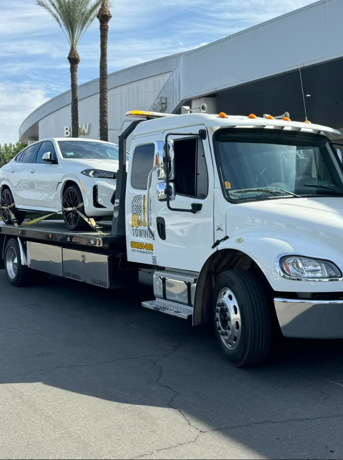
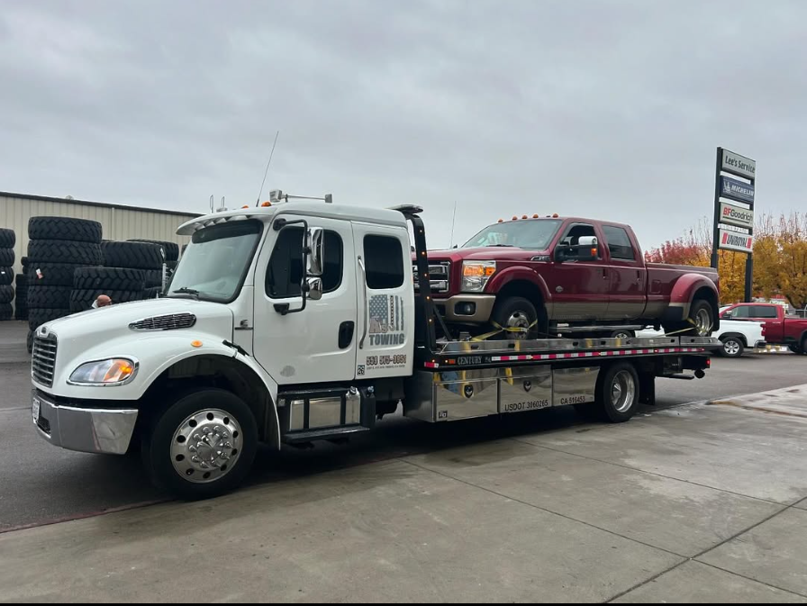
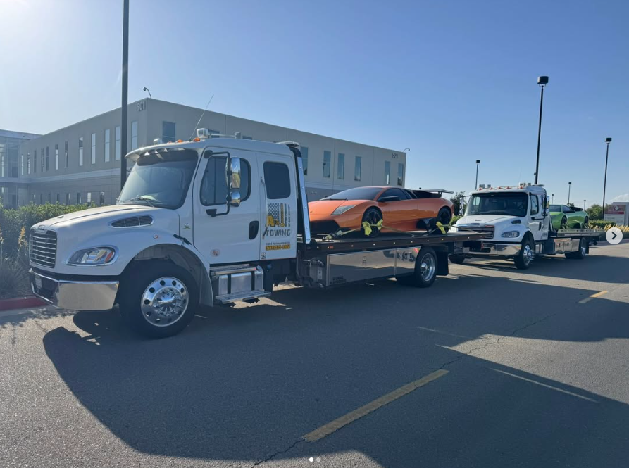
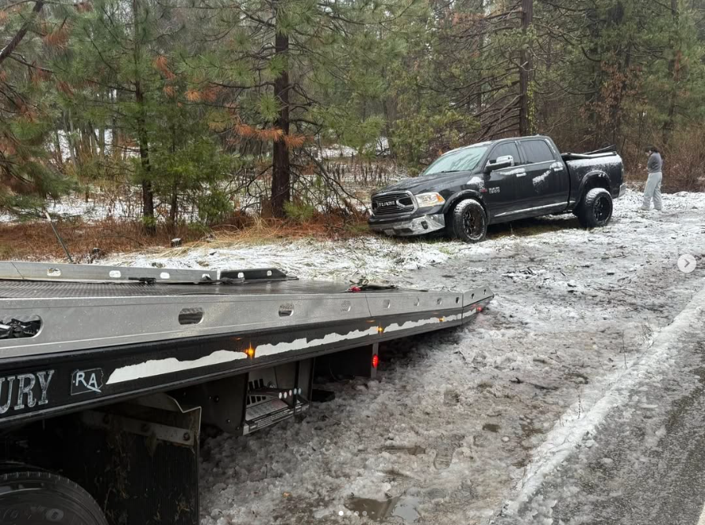
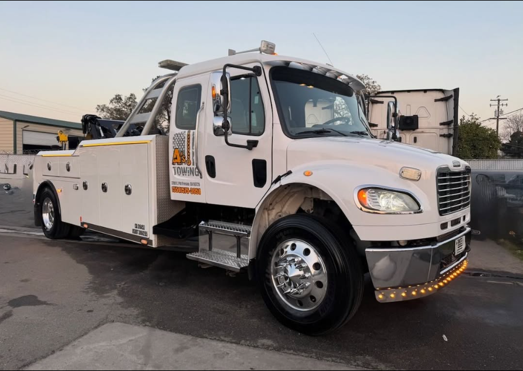

★★★★★
“Fast, professional, and the best towing equipment is used to protect your valuable car.”Khong Xiong
Local, family-owned towing for everyday vehicles, commercial rigs, heavy-duty recoveries, RVs, trailers and long-distance transport. When the road stops you, A's Towing gets you moving.
From low-profile cars and pickups to semis, RVs and commercial equipment, A's Towing matches the equipment to the job instead of forcing every vehicle onto the same setup.

Low cars, performance vehicles, pickups and customer vehicles headed to repair shops are handled with careful loading, secure tie-downs and equipment chosen for the vehicle.
Use the interactive map to view the Fresno and Clovis core area or zoom out to see the advertised long-distance service radius.
Core towing serves Fresno, Clovis and surrounding communities. Long-distance towing is available up to 500 miles from Fresno depending on the job and availability.





“Fast, professional, and the best towing equipment is used to protect your valuable car.”Khong Xiong
“Aaron from A's Towing was great towing my car long distance. Quick in replying back and got my car in no time.”Ravneet Singh
“Have had several vehicles towed by him. Courteous, good communication, great price and zero issues.”Michael Felix